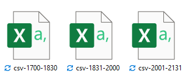
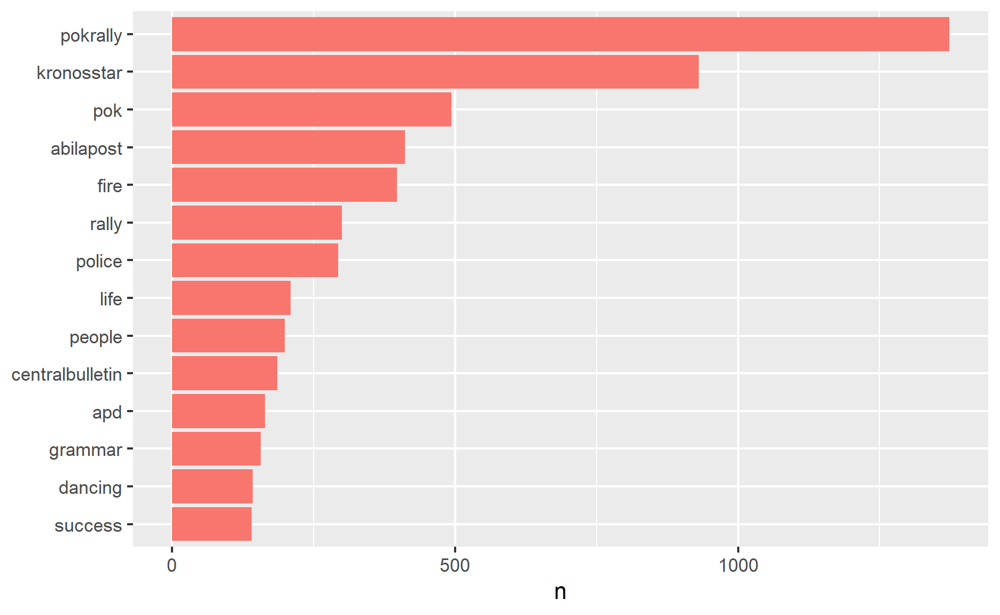

1. Overview
The 2021 Visual Analytics Science and Technology (VAST) Challenge presented researchers with a single fictitious scenario: the disappearance of staff members of the GASTech oil and gas company on location on the island of Kronos. A group named the Protectors of Kronos (POK) was the prime suspect in the disappearance. Three mini-challenges and a grand challenge were offered. For more information, please see VAST Challenge 2021.
This module will research Mini-Challenge 3 which includes multiple types of text data for participants to feature real-time streaming social media and emergency service data for participants to provide hostage and kidnapper information.This challenge has 3 tasks and questions and asked the participants to integrate results to evaluate the changing levels of risk to the public and recommend actions.
2. Data preparation and Exploration
2.1 Data Source
There are three dataset provides in Mini-Challenge 3 :
Microblog records that have been identified by automated filters as being potentially relevant to the ongoing incident
Text transcripts of emergency dispatches by the Abila, Kronos local police and fire departments.
maps of Abila and background documents.
The data of Microblog and text transcripts of emergency dispatches are found in three segments:
- Segment 1 :csv-1700-1830.csv - covers the time period from 1700 to 1830 Abila time on January 23.
- Segment 2: "csv-1831-2000.csv- covers the time period from 1830 to 2000 Abila time on January 23.
- Segment 3: csv-2001-2131.csv - covers the time period from 2000 to shortly after 2130 Abila time on January 23.
2.2 Install and load R package
In this module, the tidyverse, ggforce, GGally, plotly R and parcoords packages will be used, which could be seen from below code chunk.
packages = c('tidyverse','dplyr','readr','tm','lubridate',
'wordcloud','SnowballC', 'UpSetR','ggplot2','ggwordcloud',
'topicmodels','stringr','clock', 'tidytext','tokenizers','DT')
for (p in packages){
if(!require(p, character.only = T)){
install.packages(p)
}
library(p,character.only = T)
}
2.3 Import dataset and combine data
The data of Microblog records and emergency calls are stored in separate csv files. And three csv files share same columns but data generate from different date, which is shown below.

- Firstly, we need to combine 3 files into one consolidated file, which is necessary for the following analysis. In this step, package tidyverse would be used.The following R code shows the process of data consolidation, then three datasets with different date have been integrated into one file.
2.4 Modifying Date format
- converting character objects to dates can be made easier by using the lubridate package, which would be used to convert date type from yyyymmddhhmmss to yyyy-mm-dd hh:mm:ss, and create a new column date in data, and the code chunk could be seen below.
data$date.yyyyMMddHHmmss. <- ymd_hms(data$date.yyyyMMddHHmmss.)
- Rename date.yyyyMMddHHmmss. in data into date with concise format.
2.5 Remove Special Chacaters
In this step, we would like to use package stringr to clean special characters, including " @, < , " and none English words.
#data$message <- str_replace_all(data$message,fixed("@"),"")
data$message <- str_replace_all(data$message,fixed("<"),"")
data$message <- str_replace_all(data$message,fixed(""),"")
data$message <- str_replace_all(data$message,fixed("[\u4e00-\u9fa5]+"), "")
#data$message <- str_replace_all(data$message,fixed("RT"),"")
Besides, there are a lot of repeat records which forward from other publisher that begin with RT. The repeat records represent one review or voice, so we remove repeat records.
data <- data[- grep("RT @", data$message),]
- For convenience of further analysis, we separate ccdata and mbdata from data, they respectively represent microblog record and emergency call center data collected by the Abila, Kronos local police and fire departments.
2.6 Classify Record
Based on content of data provided, we classified records into three segments, Junk, Typical_Chatter and Meaningful records, using stringr, dplyrpackage. Because emergency call center data is credible and reliable, here we just classify Microblog data into three classes.
| Class | Definition |
|---|---|
| Junk | referred to advertisements or financial purpose reports. |
| Meaningful | refers to informative records which spread real news about ongoing or impending events happen in Aliba. |
| Typical Chatter | represents no meaningful and irrelevant or inappropriate messages post online. |
- classify Junk records: The str_detect() function is used to detect patterns of Junk records. And the below code chunk is used to identify the junk reports.|
junk <- mbdata %>% filter_at(.vars = vars(message, author),
any_vars(str_detect(., pattern = "#artists|#badcreadit|#cars
|#followme|#nobank|#meds|#cancer|#bestfood|#Grammar|cars.kronos
|#workAtHome|#gettingFired|#pharmacyripoff|#iThing|sellstuff
|homeworkers.kronos|#abilasFinest|#hungry|Easy make.money|Officia1AbilaPost|
visit this|#eastAbila link|#abilajobs|clickhere|#abilajobs|
#welksFurniture|#swat|#bugs|visit this link|this site|
junkman|carjunkers|eazymoney|junk99902|junkieduck113
|junkman377|junkman995|KronosQuoth|Clevvah4Evah")))
mbdata1 <- anti_join(mbdata,junk,by="message")
- Classify Spam records: Using the same way, we detect Spam records by below code chunk and classify corresponding emails into Spam class.
meaningful<- mbdata1 %>% filter_at(.vars = vars(message, author),
any_vars(str_detect(., pattern ="#gowaway|#POKrally|van|gun|fire
|rally|shooting|#AlibaPost|#CentralBulletin|
#POKRallyinthePark|#IntNews|#nopeace|#IntNews|#KronosStar|#stuck|
#Gastech employees|#POK connection|#Abila|#abilafire|#POK| #NewsOnline
|#hurtfirefighte|#rally|#pokrally|#SavePeople
|#terrorists|#tellme| #praying|@carlyscoffee|@dancingdolphin|
terorrist|cop|#abilawatcher|#IntNews|#KronosStar|#gettingFired
|#GelatoGalore|#helpu|#HI|#newsOnline|#DancingDolphinFire|
#jerkdrivers|#stopby|#standoff|#abilaFire|#hurtfirefighter
|#norest|#firstresponders|#IntNews|#AFDHeroes|#APD|#shooting
|#kidnapping|#troubleatgelato|#Abila|#burnabila|#hostage|
#repent|#dansingdolfinfire|#jerkdrivers|#AFD|#APDSWAT|
#shooter|#HELPME|#fire|#thanksAFD")))
- Classify Meaningful records: Apart from the Spam and Junk, the rest of emails would be classified into meaningful records, which could be received by the below code chunk.In this step, anti_join() function in dplyr package would be used.
Typical_Chatter <- anti_join(mbdata,junk,by="message")
Typical_Chatter <- anti_join(Typical_Chatter,meaningful,by="message")
Now, all records in Microblog data have been labeled with responding class- Junk, Meanigful and Spam.
- Next, we add class as a new column to represent the label of every record.
junk$class <- "junk"
Typical_Chatter$class <- "Typical_Chatter"
meaningful$class <- "meaningful"
- Using below code chunk, we combine Junk, Spam and Meaningful records into one dataframe which was renamed as data_classed. In this preprocessing step, the rbind function of dplry package would be used.
mbdata_classed <- rbind(junk, Typical_Chatter, meaningful)
- In the previous pre-processing step, we keep # as a tag to identify Junk, Spam and meaningful records. After records classifying, we move # in the tag using below code chunk.
mbdata_classed$message <- str_replace_all(mbdata_classed$message,fixed("#"),"")
2.7 Data Tokenization and Word Counts
After cleaning the text data, the next step is to segment sentence and count the occurrence of each word, to identify frequent words in records. The below code chunk shows how Multiple functions used to achieve this results:
- unnest_tokens() function from tidytext package is used to split the sentences into tokens,
- stop_words() is used to remove stop-words.
- str_detect() is used to detect the presence or absence of a pattern in string.
- filter() of dplyr package is used to subset a data frame, retaining all rows that satisfy the specified conditions.
The most common words in entire dataset could be seen from below code chunk.
mbdata_classed_token %>%
count(word,sort = TRUE) %>%
top_n(15)
word n
1 pokrally 1329
2 kronosstar 645
3 pok 343
4 rally 217
5 life 208
6 grammar 157
7 people 145
8 fire 143
9 success 140
10 police 99
11 time 96
12 tag 90
13 apd 81
14 van 78
15 abilapost 77mbdata_classed_token %>%
count(word, sort = TRUE) %>%
filter(n > 140) %>%
mutate(word = reorder(word, n)) %>%
ggplot(aes(n, word, fill = word)) +
theme(legend.position = "none")+
geom_col() +
labs(y = NULL)

- Generate the word cloud The importance of words can be illustrated as a word cloud as follow :
set.seed(1234)
wordcloud(words = mbdata_classed_token$word,
#freq = mbdata_classed_token$n,
min.freq = 10,
max.words = 200,
random.order=FALSE, rot.per=0.35,
colors=brewer.pal(8, "Dark2"))

3. Data Visualization
Question 1:
Using visual analytics, characterize the different types of content in the dataset. What distinguishes meaningful event reports from typical chatter from junk or spam?
Firstly, we count words for three classes- Junk, Spam, Meaningful using the code chunk below, then the frequent words in tree record class could be seen.
token_by_class <- mbdata_classed_token %>%
count(class, word, sort = TRUE) %>%
group_by(class) %>%
top_n(15) %>%
ungroup()
set.seed(1234)
token_by_class %>%
filter(n > 0) %>%
ggplot(aes(label = word,
size = n)) +
geom_text_wordcloud() +
theme_minimal() +
facet_wrap(~class)

The code chunk below uses bind_tf_idf() of tidytext to compute and bind the term frequency, inverse document frequency and ti-idf of a tidy text dataset to the dataset.
tf_idf <- token_by_class %>%
bind_tf_idf(word,class, n) %>%
arrange(desc(tf_idf))
Visualising tf-idf as interactive table
Table below is an interactive table created by using datatable(). The DT table can be used to review the frequency, tf-idf of common words of three classes by selecting class in DT table.
Visualising tf-idf within Three Records Classes
Leveraging facet bar charts to plot the tf-idf values of three class - Junk, Spam, Meaningful records.
tf_idf %>%
group_by(class) %>%
slice_max(tf_idf,
n = 12) %>%
ungroup() %>%
mutate(word = reorder(word,
tf_idf)) %>%
ggplot(aes(tf_idf,
word,
fill = class)) +
geom_col(show.legend = FALSE) +
facet_wrap(~ class,
ncol = 2,
scales = "free") +
labs(x = "tf-idf",
y = NULL,
title = "15 most frequent words in Three Record Classes")

- explore whether there is relationship between records length and classes.
- explore whether there is relationship between records length and location. (whether records with location is more likely to be meaningful records)
Question 2
Use visual analytics to represent and evaluate how the level of the risk to the public evolves over the course of the evening. Consider the potential consequences of the situation and the number of people who could be affected. Please limit your answer to 10 images and 1000 words.
#fire_count <- data_classed_token %>%
# filter(str_detect(word,"fire|Dancing Dolphin Department"))